| 2001年8月30日
|
| 香港天堂通訊九月號
各位香港天堂玩家如果有檢查電郵，都應該會收到天堂通訊（九月份），其中提及月費制及新手攻略，以下是其內容：
親愛的天堂會員,
天堂通訊 – 九月份
1) 天堂月費制
千呼萬喚……始！出！來！
「天堂月費計劃」終於隆重登場！
全亞洲至人氣網絡遊戲「天堂」，為了慶祝於短短兩個月內在香港突破十萬會員，決意向廣大玩家們進行大回饋！由9月1日0時0分開始，玩家每月只需花費HK$120，就可以在1個月內（30天），每日24小時任上「天堂」、任玩「天堂」了！平均一日花費只是
~~ 4蚊！
這絕對是來自「天堂」的福音！不要怕，只要上！
請各位玩家們、會員們到 www.lineage.com.hk
網頁，按照以下方法參加月費計劃：
1. 到 www.lineage.com.hk
2. 選擇「帳務查詢 / 選擇月費或點數計費」
3. 點「選擇計費方式」
4. 再選擇「月費制」
請注意！重要事項！
1）
「天堂」不設月費卡，會員只須到全港便利店或電腦軟件店購買現有的「天堂時數卡」進行增值及轉移點數到「天堂」帳戶便可。
2） 會員的「天堂」帳戶需要有足夠點數(120點)才可使用月費。不夠點數的會員，請先到GD2S開卡中心增值點數，再將120點轉移到「天堂」帳戶後，便可依上述方法選擇使用月費
3）
會員可自由選擇月費制或點數制的計費方式，只須到「帳務查詢
/ 選擇月費或點數計費」點「選擇計費方式」便可。
4） 「天堂」月費的使用期間是30天，為了在使用期限完結後可繼續進入遊戲，請到「帳務查詢
/
選擇月費或點數計費」點「選擇計費方式」重選月費計劃，否則在未重選任何計費方式前是不能夠
Login 遊戲。
5）會員在「天堂」剩餘時間用完前是不能預先選定下月使用的任何計費方式，請會員在所有「天堂」剩餘時間用完後再重選。
2) 天堂新手攻略本 – 1級至20級
為了讓天堂的新會員更易和更快掌握升級及遊戲技巧,
天堂將印制一批 “新手攻略本” 免費送給天堂會員,
有興趣的會員可由9月15日開始, 用以下方法
索取 :
i) 連同回郵信封(貼上HK$1.3郵票) 寄 “香港灣仔駱克道333號,
中國網絡中心45樓NC Gamania市場部收” 信封面請註明 “索取天堂新手指南”便可.
(先到先得, 送完即止)
ii) 到指定internet cafe或其他商戶免費索取, 請由9月15日開始到www.lineage.com.hk瀏覽商戶名單.
如閣下不欲再收到任何有關天堂的資訊,
請附上個人資料並聯絡客戶服務部 : -
center@mail.lineage.com.hk
水城Haine(哈賴)韓國官方網站宣傳片
在8月8日的IRC Chat上天堂之父Jake Song曾經透露下一次大更新將會有city
of lake 'Haine' with under water dungeons，即是水城哈賴及水底洞穴，現在在韓國官方網站已經放了有關大更新的宣傳片，大家一定要看看！
http://www.lineage.co.kr/question/opening.htm
|
| 2001年8月29日
|
| 吳宇森監製《天堂》電影版
轉載自太陽報：
http://www.the-sun.com.hk/channels/ent/20010829/20010829005535_0003.html
梁詠琪代言人遊戲受歡迎
吳宇森監製《天堂》電影版
文： 孔惠萍 29/08/2001
由吳宇森執導、周潤發主演的荷里活電影雖然要到下年才開拍，不過吳宇森並沒有打算在這段期間休息，還積極向韓國市場進軍，最近答應了韓國的Digital Dream Studio公司，為梁詠琪做代言人的網絡遊戲《天堂》拍攝電腦動畫電影和電視，正式打入韓國電影市場。
《天》片製作費達100億韓圜（約6,000萬港元），由吳宇森擔任製作總監，導演則是執導章子怡主演電影《武士》的金成洙，《天堂》電影及電視版預計在下年十月上映。
此外，製作公司已跟中國方面達成協議，《天》片可在中韓兩地同步上映，而該公司表示他們已經借助吳宇森在國際的知名度，跟各國的發行商接觸，可望得到一筆可觀的版權費，更揚言影片成績可以超越正在上映中的同類電腦動畫《太空戰士之滅絕光年》。
香港天堂月費卡$120
有關資料可以參考GamePlayers的網頁：
http://www.gameplayers.com.hk/onlinegames/online/Lineage/content.html
真想不到這麼重要的消息竟然沒有在官方網站或在遊戲中提及．．．
|
| 2001年8月28日
|
| Lineage單拖逃命往龍谷7/F Video
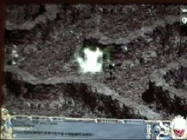
http://www.hklineage.com/hkdv7fa.rm
(請安裝Real Player)
Lineage單拖餵地龍Video
http://www.hklineage.com/hkdv7fb.rm
(請安裝Real Player)
注：網主已經將之前在7/F 30分鐘找地龍和之後20分鐘和地龍玩捉迷藏的片段刪去，但這段Video仍是非常悶的．．．
新介面更進消息
如果大家有更新了新介面，可能發覺右下角由右數起第二個按鈕好像沒用，其實大家只要將語系轉做英文，就會發現那個其實是"Option"選項，大家可以不用打指令去調較遊戲中的設定。有關詳情見下圖：
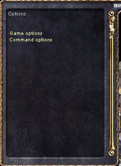
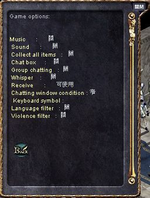 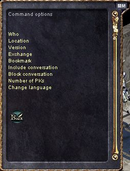
另外昨天所提及的好友名單，官方正式的譯名為朋友目錄，而那個昨天所說的好友名單按鈕應為"團體選項"(Community
Options)，除了可以控制朋友目錄外，亦可以看血盟及組隊的資料，見下圖：
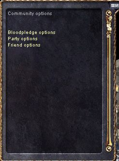 
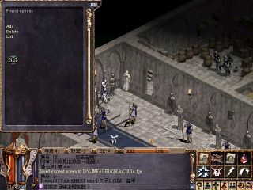
|
| 2001年8月27日
|
| 天堂新介面（按圖放大）
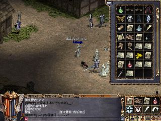
在韓國測試伺服器已經更新了新介面，不過網主覺得顏色配搭很怪，如果大家想更新，可以將天堂的捷徑由"/hongkong"轉為"/test"，強烈建議大家先備份天堂才去更新，另外大約有四千個檔案要更新，下載可能要很久。 新功能：好友名單(Buddy
List) 如果大家有留意公頻網主大約在兩星期前曾經提及天堂將會有好友名單(Buddy
List)的功能，在看過新介面後，網主已經可以肯定此功能將會生效。大家可以留意右下角由右數起第三個按鈕，那個按鈕有兩個人，正是好友名單的按鈕！如果網主推測沒錯的話，在好友名單功能更新後大家可以用以下指令去管理你的好友名單：
/addbuddy （加入好友）
/delbuddy （刪除）
/buddy （看好友名單） Lineage單獨探望地龍圖片（有關Video製作中） 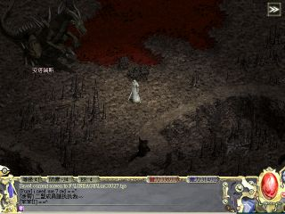 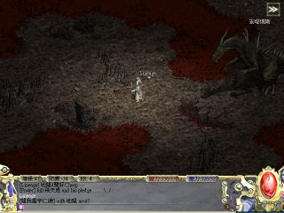 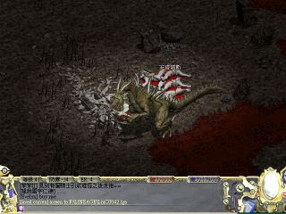
|
| 2001年8月26日
|
| 說話之島怪獸派對(Pine Party)照片
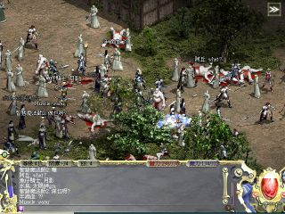
在派對開始一分鐘後，GM用神秘絕招一下子將全畫面大部分怪殺光
風木守城照片
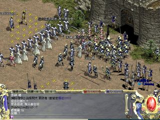
|
| 2001年8月25日
|
| 韓國伺服器打安塔瑞斯(地龍)片段
鳴謝劍無影提供片段連結，本網已經將片段下載並放在香港伺服器上，大家可以在這裡下載：
http://www.hklineage.com/dragon.zip
(約12MB)
|
| 2001年8月24日
|
| 肯特攻城照片
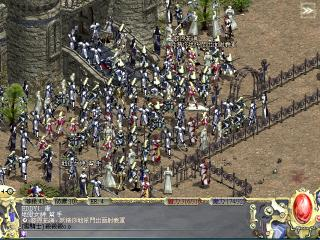
內城門外的情境
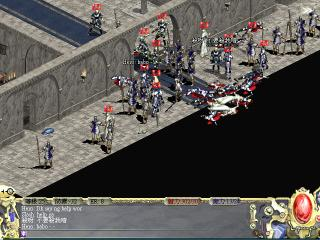
大龐內的情況
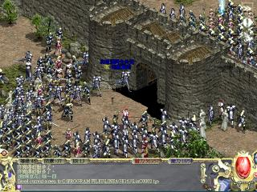
另附台灣肯特城的照片，鳴謝綠茶提供照片 ^^
|
| 2001年8月23日
|
| 有關1.65版本晚上光暗處理的改變
在1.65更新後，在晚上的光度會加亮，大家不必調較顯示器亦可以清楚看到周圍的時物，見下圖：
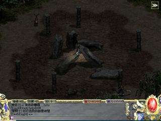
但在山洞內仍然和以前一樣黑，而妖精的夜視功能在1.65版中亦只會在山洞內生效。
|
| 2001年8月22日
|
| 伺服器第八次服務中斷 GM推卸責任
今天約2:13am，伺服器第八次服務中斷，約五分鐘後玩家可以重新登入，並出現回潮的情況，其後GM向玩家解釋原因，見下圖：
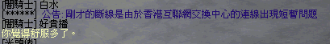
但本網認為GM的解釋是極不合理和不真實的！因為如果是NC
Gamania往香港互聯網交換中心(HKIX)的連線出現問題，那麼整個NC
Gamania的連線也會有問題，因為他們是使用同一連線往HKIX的，但本網網主在問題出現後三秒立即Ping往202.85.231.10，即是天堂更新檔伺服器，是沒有問題的，即是說NC
Gamania往HKIX的連線根本沒有出現問題。加上GM解釋那個是連線問題，為甚麼玩家在重新登入後會回潮？這個很明顯是伺服器本身的問題，而非連線問題。本網認為GM的解釋無疑是推卸責任！
|
| 2001年8月21日
|
| 1.65更新詳情
在韓國、台灣和日本都先後更新到1.65，而美國伺服器亦會在明天更新，相信香港亦會在明天維修後更新，有關更新的詳情大家可以參考：
https://secure.lineage.co.kr/new_announcement/update/read.asp?ListNum=66&PageNum=1
（韓國）
http://www.lineageonline.jp/new_update/read.asp?ListNum=11&PageNum=1
（日本）
http://www.lineagethebloodpledge.com/item31.asp
（美國）
但似乎每個伺服器的更新說明都有少許出入，本網建議大家以韓國的為準（但有誰懂韓文？
><）
|
| 2001年8月19日
|
| 思巴克女皇...

終於有人進入龍谷洞深處遇見思克巴女皇！鳴謝Hero提供照片
^^
|
| 2001年8月18日
|
| 風木城堡特羅斯盟第一次守城

在攻方宣戰後，守防嚴陣以待。

在攻方發動第二次攻擊後，死傷無數。
|
| 2001年8月17日
|
| 賭魔與小翠兒結婚 ^^

在圖中長者前的兩位歐吉就是新朗賭魔和新娘小翠兒，在此祝他們新婚快樂^^。
|
| 2001年8月13日
|
| i-Cable用戶連線齊中斷
今天約9:01pm，所有連接香港天堂伺服器的i-Cable用戶連線皆中斷，伺服器人數由1800人急劇下跌至1200人。其實i-Cable在過去連接香港天堂伺服器都不是很穩定，如果大家有留意閒聊頻道的話，經常有i-Cable玩家因為斷線而Lag死。本網希望有關方面能夠正視這方面的問題，因為i-Cable網絡供應商的用戶人數即將成為全港之首。
伺服器服務第七度無故中斷
今天約11:59am，伺服器連線突然中斷，全部玩家皆斷線，玩家重新新登入後，所有狀況回潮往約一分鐘前。這是近四天內第四次同類事故。
|
| 2001年8月12日
|
| 伺服器服務第六度無故中斷 點數顯示錯誤 GM態度惡劣
今天約5:32am，伺服器連線突然中斷，全部玩家皆斷線，玩家重新新登入後並沒有回潮，因此不少玩家因此被怪物所殺，而且在登入時發覺顯示的點數只有41點，不過在網頁上顯示的點數則沒有改變。其後GM向各玩家解釋，但態度惡劣，見下圖：
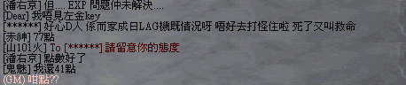
|
| 2001年8月11日
|
| 伺服器服務第五度無故中斷
今天約7:06pm，伺服器連線突然中斷，約1800名玩家同時斷線，其後伺服器重新啟動，各人都回潮往大約30秒前的狀況。有關中斷原因GM說仍在調查中，但他們調查了半小時亦不知原因。
|
| 2001年8月10日
|
| 伺服器第四度大斷線
今天約2:00am，伺服器連線第四度無故中斷，全部玩家的連線均被中斷，其後伺服器亦沒有回潮，事後部分玩家詢問GM斷線的原因，但GM沒有回覆。
|
| 2001年8月8日
|
| Lineage IRC Chat
今天約香港時間8:30am至9:15am在irc.ianstorm.com#StormEvent有一個Destination
Games Chat的聊天室，當中有Richard 'Lord British' Garriott, Jake
Song and Starr Long和大家大談他們對Online Game市場的看法及發展，同時亦透露不少由Utimate
Online及Lineage公司合作而推出的新遊戲的部分資料。有關的聊天記錄可以在這裡觀看。而天堂首席Programmer
Jake Song亦透露了不少天堂未來的更新，如下：
- Episode 9: city of lake 'Haine' with under water dungeons（水城哈賴，內有水底洞穴）
- Episode 10: Aden Castle （亞丁城）
- 所有角色都會像Test Server中的女魔法師一樣，行路時動作會很順暢。
- 所有角色當穿著不同的裝備時，會有不同的圖樣。
|
| 2001年8月6日
|
| 伺服器第三度大斷線 近兩千名玩家受影響
今天在約11:30pm，在伺服器最敏忙的時間，伺服器連線突然中斷，近兩千名玩家同時斷線，其後伺服器亦沒有回潮，因此有很多玩家都在斷線期間被怪物所殺，除了損失經驗值外，更有玩家掉了+6細劍等珍貴武器。粗略估計今次斷線為玩家造成的損失達5,000,000天幣，而玩家的儲經驗值升等級的時間更不能用金錢來衡量。
|
| 2001年8月3日
|
| 今天又有更新檔 一Bug完一Bug起
今天伺機器在11:30修維後，有一個檔案的更新，主要是修正了瞬間移動控制戒指在中文語言下不能使用的問題，但卻使大部玩家在進入冒險洞兩樓的巴風特房時，都會因用戶端錯誤而被踢走。在約三小時後，又更新了用戶端修正了有關問題。
|
| 2001年8月1日
|
| 今天小更新
今天有數個檔案的更新，官方並沒有列出詳細情況，而到目前為止本網找了以下的改變：
1. 部分玩家不能再按F4去拾身邊附近的道具。 2.
擲骰子的速度限制由1.63初的一秒最多一次改為一秒兩次。 3.
加速時限再不會累積，此包括使用加速魔法及喝綠水藥水（自我加速藥水）。 4.
顯示不同區域(Zone)寶珠的圖有少許移位。 5.
在登入後會顯示剩餘點數。 6.
假如要使用瞬間移動控制戒指，則要將語言切換為英文。
|


{kind=link}
{kind=link}
{kind=link}
{kind=link}
{kind=link}
{kind=link}
{kind=link}
{kind=link}
{kind=link}
{kind=link}
{kind=link}